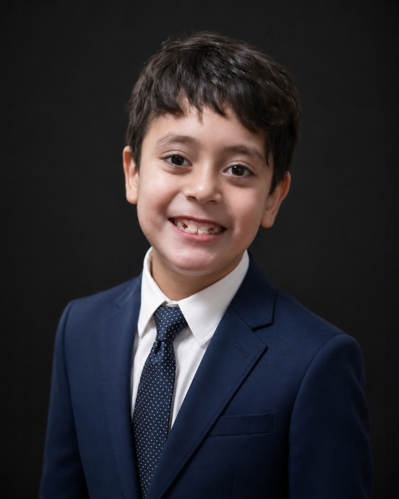

📺 Videos de Samuel
Videos seguros y divertidos para vos
⬅️ Volver a la app
📡
Sin internet. Los videos necesitan conexión a internet para verse.
¿Qué querés ver hoy?
Tocá una categoría para elegir un video
🇦🇷
Videos Argentina
Himnos, banderas, actos escolares y la Selección
📚
Aprender con videos
Números, colores y pintar
🎵
Canciones
Canciones y música para chicos
🎨
Dibujos
Dibujos animados para chicos
🚗
Autos y motos
Vehículos y manejo para chicos
🫧
Lavado de autos
Lavar y limpiar autos, muy divertido
⬅️ Categorías
Tocá un video para verlo
⬅️ Volver
😕 Este video no está disponible. Probá otro.
🔒 Solo videos seleccionados para Samuel — sin búsqueda libre